6.3 Excursion au pays des mathématiques non commutatives
6.3.1 Remarques et présentation générale
En vertu de la dualité existant entre un espace M et l’algèbre commutative C(M)
des fonctions sur cet espace (la correspondance précise a été donnée plus haut),
on peut essayer de re-écrire toutes les mathématiques traitant des propriétés des
“espaces” dans le langage purement algébrique de la théorie des algèbres
commutatives. On peut essayer, également, de re-exprimer tous ces concepts
d’une façon qui ne fasse pas explicitement appel à la commutativité de l’algèbre.
Bien entendu, ce n’est pas toujours possible, mais, lorsque c’est le cas, on
peut alors effacer l’adjectif “commutatif” et promouvoir le concept en
question au niveau (par exemple) d’une définition, valable pour les algèbres
non commutatives, en général. D’une certaine façon, on pourrait voir les
mathématiques non commutatives simplement comme une étude des algèbres
associatives non commutatives. Un tel point de vue ne correspondrait cependant
pas à la démarche psychologique adoptée : c’est en effet la géométrie ordinaire —
plus précisemment la notion de point — qui est souvent choisie comme support de
notre intuition ; les thèmes qui intéressent la géométrie non commutative sont
précisemment les propriétés des algèbres non commutatives qui généralisent les
propriétés des espaces “ordinaires”, même si les points n’existent plus.
De cette façon, on peut alors construire une théorie de la mesure non
commutative, une topologie non commutative, un calcul différentiel pour
les algèbres non commutatives (voir supra), une théorie des connexions,
des espaces fibrés (non commutatifs) et même une généralisation de la
théorie des groupes (la théorie des groupes quantiques). Notre propos
n’est pas ici de détailler et d’étudier toutes ces théories, mais simplement
d’illustrer les considérations qui précèdent et d’effectuer un tour rapide
de ce zoo non commutatif, en espérant que le lecteur aura plaisir à y
retourner en consultant la littérature spécialisée. L’ouvrage présent étant
essentiellement dédié à l’étude de certains aspects de la géométrie différentielle,
nous avons décidé de consacrer néanmoins la section précédente à une
étude un peu plus détaillée des notions relatives aux calculs différentiels
non commutatifs. Pour le reste, notre étude ne sera guère plus qu’une
ébauche.
6.3.2 Topologie non commutative et théorie de la mesure non commutative
Nous avons déjà parlé de la transformation de Gelfand établissant une
correspondance entre espaces topologiques compacts et C*-algèbres commutatives
unitales (l’existence d’une unité est liée à l’hypothèse de compacité). On voit
donc, en enlevant l’adjectif “commutatif” que la topologie non commutative n’est
autre que l’étude des C*-algèbres non commutatives.
Passons à la théorie de la mesure. Classiquement, au lieu de démarrer avec un
espace topologique M, on peut partir de l’algèbre C(M) des fonctions continues
sur M et définir les mesures (positives) comme les formes linéaires continues
(positives) sur l’algèbre C(M), c’est à dire comme des fonctionnelles μ telles que
μ[ff] ≥ 0,∀f ∈ C(M). La correspondance avec la notion élémentaire de mesure
se fait grâce au théorème de Riesz, c’est à dire en écrivant μ[f] = ∫
Xfdμ. A
partir de C(M), nous définissons les mesures ; pour une mesure μ donnéee, nous
pouvons fabriquer l’espace de Hilbert  = L2(M,μ) des fonctions de carré
intégrable pour cette mesure. C(M) agit dans cet espace de Hilbert par
multiplication : nous avons une représentation π définie par π(f)g = fg, avec
f ∈ C(M) et g ∈. A partir de , nous pouvons fabriquer l’algèbre
L∞(M,μ) des fonctions mesurables essentiellement bornées sur M. Soit
= L2(M,μ) des fonctions de carré
intégrable pour cette mesure. C(M) agit dans cet espace de Hilbert par
multiplication : nous avons une représentation π définie par π(f)g = fg, avec
f ∈ C(M) et g ∈. A partir de , nous pouvons fabriquer l’algèbre
L∞(M,μ) des fonctions mesurables essentiellement bornées sur M. Soit  (H)
l’algèbre des opérateurs bornés sur . Rappelons que l’algèbre L∞(M,μ)
peut être construite comme le commutant de l’action π de C(M) dans
(H).
(H)
l’algèbre des opérateurs bornés sur . Rappelons que l’algèbre L∞(M,μ)
peut être construite comme le commutant de l’action π de C(M) dans
(H).
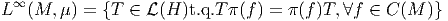 La
mesure μ peut alors être étendue à l’algèbre L∞(M,μ) tout entière. Cette
dernière algèbre possède la propriété remarquable d’être égale à son propre
commutant dans (H) (cette propriété caractérise précisemment un
type de sous-algèbres de (H) qu’on appelle algèbres de Von Neumann
).
Tout ce qu’on vient de rappeler figure — peut être dans un ordre différent —
dans un cours standard de théorie de la mesure. Le trait essentiel, dans la
présentation qui précède est de ne pas faire intervenir les points de l’espace M.
En recopiant tout ceci, mais en effaçant l’adjectif “commutatif”, on peut alors
inventer une version non commutative de la théorie de la mesure…Soit dit en
passant, les physiciens théoriciens ont inventé la plupart de ces différents
concepts, dans le cadre de la mécanique statistique quantique, bien avant qu’ils
aient été formalisés par des mathématiciens ! Reprenons donc rapidement ce qui
précède, en partant d’une C*-algèbre non commutative  , remplaçant la donnée
de C(M). On définit les états (ce sont précisemment des mesures non
commutatives) comme ci-dessus : un état μ est une forme linéaire positive
continue sur , c’est à dire μ ∈* et μ[ff] ≥ 0,∀f ∈. On peut supposer μ
normé : μ[1 l] = 1. On construit alors un espace de Hilbert en définissant tout
d’abord le produit scalaire (f,g) = μ[f*g] sur l’espace lui-même (on n’a alors
qu’une structure pre-Hilbertienne) puis en fabriquant l’espace de Hilbert
correspondant (complété et séparé). Cette construction bien connue porte le
nom — en mathématiques non commutatives — de construction GNS
(Gelfand-Naimark-Segal). Comme dans le cas commutatif, agit dans par
multiplication, ce qui fournit une représentation π de dans l’espace des
opérateurs bornés (H). On considère alors
, remplaçant la donnée
de C(M). On définit les états (ce sont précisemment des mesures non
commutatives) comme ci-dessus : un état μ est une forme linéaire positive
continue sur , c’est à dire μ ∈* et μ[ff] ≥ 0,∀f ∈. On peut supposer μ
normé : μ[1 l] = 1. On construit alors un espace de Hilbert en définissant tout
d’abord le produit scalaire (f,g) = μ[f*g] sur l’espace lui-même (on n’a alors
qu’une structure pre-Hilbertienne) puis en fabriquant l’espace de Hilbert
correspondant (complété et séparé). Cette construction bien connue porte le
nom — en mathématiques non commutatives — de construction GNS
(Gelfand-Naimark-Segal). Comme dans le cas commutatif, agit dans par
multiplication, ce qui fournit une représentation π de dans l’espace des
opérateurs bornés (H). On considère alors  , le bi -commutant de dans
(H). Ce bi-commutant est une algèbre de Von Neumann (il est égal à
son propre bi-commutant) ; c’est donc l’analogue non commutatif de
L∞(M,μ).
Rappel : lorsque est une algèbre d’opérateurs, , ′ et ′′ sont d’ordinaire
différents, mais ′ = ′′′. La dernière étape consiste à étendre la définition de
l’état μ à l’algèbre de Von Neumann tout entière (on a évidemment
⊂).
, le bi -commutant de dans
(H). Ce bi-commutant est une algèbre de Von Neumann (il est égal à
son propre bi-commutant) ; c’est donc l’analogue non commutatif de
L∞(M,μ).
Rappel : lorsque est une algèbre d’opérateurs, , ′ et ′′ sont d’ordinaire
différents, mais ′ = ′′′. La dernière étape consiste à étendre la définition de
l’état μ à l’algèbre de Von Neumann tout entière (on a évidemment
⊂).
La théorie que l’on vient d’ébaucher est à la base de très nombreux
développements, aussi bien en mathématiques (théorie des facteurs), qu’en
physique (mécanique quantique statistique des systèmes avec nombre fini ou infini
de degrés de liberté). Notre but, comme nous l’avions anoncé plus haut, n’était
que d’attirer l’attention du lecteur sur le parallèle évident existant entre ces deux
théories : théorie de la mesure (en fait mesures de Radon) et théorie des algèbres
de Von Neumann ; l’un étant en quelque sorte la généralisation non commutative
de l’autre.
6.3.3 Calcul différentiel non commutatif
Comme on l’a vu en 6.2, étant donné une algèbre associative , on peut toujours
fabriquer une algèbre différentielle Z Z-graduée qui coïncide avec en degré 0. Le
choix d’une telle algèbre différentielle n’est pas, en général, unique : on dit qu’on
fait alors le choix d’un calcul différentiel pour l’algèbre . On peut faire
un choix qui soit plus “général” que les autres (formes différentielles
universelles). Les différentes algèbres différentielles possibles (les autres
calculs différentiels associables à une algèbre associative donnée) sont des
quotients de l’algèbre des formes universelles. Nous renvoyons le lecteur à
la section précédente pour une analyse plus détaillée de ces différents
choix.
6.3.4 Espaces fibrés non commutatifs et modules projectifs
En géométrie différentielle ordinaire, un espace fibré principal peut être considéré
comme un outil servant à la fabrication de fibrés associés, de la même façon que
les groupes eux-mêmes servent à fabriquer des représentations. En géométrie
non commutative, on pourrait, bien sur, tenter de généraliser dans un
premier temps la structure de groupe elle-même (c’est la théorie des groupes
quantiques), puis la structure de fibré principal, et enfin celle de fibré
associé. Ces généralisations existent. Cependant la définition et l’étude des
groupes quantiques (ou algèbres de Hopf ) nous entrainerait trop loin. Nous
préférons donc suivre ici une approche plus directe, qui n’utilise pas cette
notion.
Nous partons de la constatation suivante : en géométrie différentielle
ordinaire, l’ensemble ΓE des sections d’un fibré associé E (les champs de
matière de la physique) constitue un module sur l’algèbre C∞(M) des
fonctions sur la base. Par exemple, si x ∈ M V (x) ∈ ΓE est un champ de
tenseurs (ou de spineurs …), et si x ∈ M
V (x) ∈ ΓE est un champ de
tenseurs (ou de spineurs …), et si x ∈ M f(x) ∈ I R (ou lC) est une fonction,
alors [fV ](x) = f(x)V (x) est aussi un champ de tenseurs (ou de spineurs
etc…).
f(x) ∈ I R (ou lC) est une fonction,
alors [fV ](x) = f(x)V (x) est aussi un champ de tenseurs (ou de spineurs
etc…).
Ce n’est pas la notion d’espace fibré vectoriel associé que nous allons
généraliser, mais celle de l’ensemble de ses sections. Etant donné une
algèbre associative , possiblement non commutative, nous allons donc
considérer tout module Γ sur comme l’analogue non commutatif d’un fibré
vectoriel associé. En fait, dans le cas commutatif, les modules obtenus
par construction de fibré associé sont d’un type un peu particulier. On
dit qu’ils sont projectifs de type fini (théorème de Serre-Swann). Sans
rentrer dans les détails, cela signifie la chose suivante. L’ensemble des
sections d’un fibré vectoriel trivial dont la fibre type est de dimension
n est manifestement isomorphe au module (C∞(M))n. Lorsque le fibré
n’est pas trivial, il suffit de se placer dans un espace un peu plus grand
(c’est à dire de rajouter un certain nombre de dimensions à la fibre) pour
le trivialiser. Le fibré de départ est alors obtenu comme p(C∞(M))n,
p désignant un projecteur (p2 = p) de l’algèbre des matrices n × n sur
C∞(M).
Dans le cadre non commutatif, on remplacera donc la notion d’“espace des
sections d’un fibré vectoriel” (physiquement l’espace des champs de matière d’un
certain type) par la notion de module projectif fini sur une algèbre associative .
L’espace vectoriel pn, p désignant un projecteur, est manifestement un module
(à droite) sur .
Si n’est pas commutative, il faut évidemment faire la distinction entre les
modules à droite et les modules à gauche.
Notons, pour finir, qu’un cas intéressant de module sur est celui où
on choisit un module particulier égal à l’algèbre elle-même opérant sur
elle-même par multiplication (c’est l’analogue non commutatif d’un fibré en
droites).
6.3.5 Connections généralisées en geometrie non commutative
Soit Ξ un calcul différentiel sur une algèbre , c’est à dire une algèbre
différentielle Z Z-graduée, avec Ξ0 = . Soit un module à droite sur . Une
différentielle covariante ∇ sur est une application ⊗ Ξp
Ξp ⊗
Ξp+1 telle
que
⊗
Ξp+1 telle
que
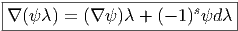
lorsque ψ ∈⊗Ξs et λ ∈ Ξt. L’opérateur ∇ n’est certainement pas linéaire par
rapport à l’algèbre mais il est facile de constater que la courbure ∇2 est un
opérateur linéaire par rapport à .
Dans le cas particulier où l’on choisit le module comme l’algèbre
elle-même, toute 1-forme Ξ (tout élément de Ξ1) permet de définir une
différentielle covariante : on pose simplement
 où
1l est l’unité de l’algèbre . Lorsque f ∈, on obtient
où
1l est l’unité de l’algèbre . Lorsque f ∈, on obtient
 De
plus, ∇2f = ∇(df + ωf) = d2f + ωdf + (∇ω)f -ωdf = (∇ω)f. La courbure, dans
ce cas, est égale à
De
plus, ∇2f = ∇(df + ωf) = d2f + ωdf + (∇ω)f -ωdf = (∇ω)f. La courbure, dans
ce cas, est égale à

Choisissons u, un élément inversible de et agissons avec d sur l’equation
u-1u = 1 l. On obtient (utilisant le fait que d1 l = 0) l’equation

Définissons également ω′ = u-1ωu + u-1du et calculons la nouvelle courbure
ρ′ = dω′ + ω′2. On obtient immédiatement ρ′ = u-1(dω + ω2)u = u-1ρu
où
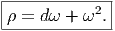
Ceci montre que les formules usuelles sont valables, sans qu’il soit besoin de
supposer la commutativité de l’algèbre .
Remarque : Ici nous avons choisi un module (un ingrédient nécessaire pour
construire n’importe quelle théorie de jauge) égal à l’algèbre elle-même. Plus
généralement, nous aurions pu choisir un module libre n, ou même, un module
projectif pn sur . Dans ce dernier cas, le formalisme précédent doit être
légérement modifié. En effet, le projecteur p va intervenir dans le calcul de la
courbure (c’est un peu comme si nous faisions de la géométrie différentielle
classique de façon extrinsèque, en plongeant notre espace dans un espace “plus
grand”). Comme toujours, la courbure est ρ = ∇∇. La différentielle covariante
est
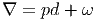 où
ω est un élément de Ξ1 tel que pωp = ω. En effet, si X ∈, ∇X = pdX + ωX et
il est facile de vérifier que cela définit bien une connexion : prenons f ∈, alors
Nous avons utilisé le fait que pX = X. La courbure ρ = ∇2 se calcule alors
comme suit :
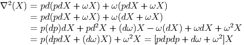
Nous avons utilisé les propriétés ωp = p, dX = d(pX) = (dp)X + pdX ainsi que
p(dp)p = pd(p2) -pdp = 0, ce qui entraine pdpdX = pdpdpX + p(dp)pX = pdpdpX.
En conclusion, la courbure, dans le cas où le projecteur ne se réduit pas à
l’identité est égale à
 Il
faut remarquer le fait que la courbure s’obtient à partir de ∇2 (ce qui en
fait bien un opérateur linéaire par rapport aux éléments de ) et non
pas en recopiant servilement la formule classique dω + ω2, ce qui serait
faux !
Il
faut remarquer le fait que la courbure s’obtient à partir de ∇2 (ce qui en
fait bien un opérateur linéaire par rapport aux éléments de ) et non
pas en recopiant servilement la formule classique dω + ω2, ce qui serait
faux !
6.3.6 Cohomologie des espaces non commutatifs
La cohomologie de Hochschild
- Nous savons que la différentielle δ sur Ω est presque triviale, du
point de vue cohomologique. Le “presque” vient du fait que δ1 l = 0 et
on rappelle qu’il est nécessaire de supposer que possède une unité
pour construire Ω (on verra un peu plus loin comment faire si ce
n’est pas le cas). Il est donc raisonnable de chercher à définir une
autre théorie cohomologique ou homologique qui se restreigne, dans
le cas classique, à celle déjà connue (celle de De Rham). En fait, nous
allons voir que ceci se fait en deux temps : on définit tout d’abord
la cohomologie de Hochschild, puis la cohomologie cyclique, et c’est
cette dernière qui va nous fournir un analogue non commutatif de la
cohomologie de De Rham.
- Nous avons déjà mentionné le fait que, dans le cas classique (le cas
de la géométrie “commutative” usuelle où = C∞(X)), l’algèbre
Ω des formes universelles était “bien plus grande” que celle des
formes différentielles usuelles Λ(X). Nous allons voir que, dans le cas
classique, il existe une façon purement (co)homologique de récupérer
l’algèbre des formes différentielles usuelles, ou plutôt, en travaillant de
façon duale, l’espace des courants de De Rham. Le but de cette section
est donc d’ébaucher une construction qui conduise aux courants de
De Rham dans le cas usuel, mais qui soit, bien entendu, valable pour
une algèbre associative quelconque.
- On définit l’opérateur co-bord de Hochschild b (aussi appelé
différentielle de Hochschild) comme suit :
Soit ϕ une (n + 1)-forme linéaire ϕ(a0,a1,…,an) sur l’algèbre . Alors
Par exemple,
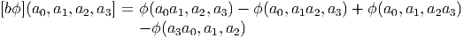
L’étape suivante consiste à montrer que b2 = 0, ce qui est à la fois
immédiat, et pénible…
Puisque nous avons un opérateur cobord (il est de carré nul et envoie bien
les n formes dans les n + 1 formes), nous pouvons définir l’espace des
cocycles de Hochschild Zn = {ϕ ∈ Cn∕bϕ = 0}, l’espace des cobords de
Hochschild Bn = {ϕ ∈ Cn∕ϕ = bψforψ ∈ Cn-1} et les groupes de
cohomologie (de Hochschild) correspondants Hn = Zn∕Bn. Ci-dessus, la
notation Cn, l’espace des cochaines de Hochschild, désigne l’espace des
formes n + 1 multilinéaires sur (attention à la translation d’une
unité).
Remarque terminologique : un lecteur curieux, qui chercherait la définition
de la cohomologie de Hochschild dans un ouvrage d’algèbre homologique
pourrait être surpris car celle-ci fait d’ordinaire référence au choix d’un
certain bimodule. Ici, le bimodule en question n’est autre que le dual de .
Nous n’avions pas besoin de mentionner ceci plus haut mais il
est bon de savoir que c’est précisemment ce choix particulier de
bimodule (ainsi que l’existence d’un accouplement naturel entre
et son dual *) qui est à l’origine de la définition précédente de
b.
- Dans le cas classique (celui de la géométrie différentielle “commutative”
habituelle), nous savons que les courants de De Rham (voir 1.12.5) sont
définis comme distributions sur les formes différentielles de De Rham. En
d’autres termes, si C is un p-courant et ω est une p-forme, alors⟨C,ω⟩ est
un nombre. Nous allons montrer qu’il existe une correspondance entre
courants arbitraires et cocycles de Hochschild, dans le cas particulier des
2-formes, en laissant au lecteur le soin de généraliser cette propriété au cas
p > 2.
Des courants de De Rham aux cocycles de Hochschild : étant donné C,
nous construisons ϕ(f,g,h) = ⟨C,fdg ∧ dh⟩. on peut alors vérifier que
bϕ = 0.
Des cocycles de Hochschild aux courants de De Rham : étant donné ϕ,
nous construisons ⟨C,fdg ∧ dh⟩ = ϕ(f,g,h) - ϕ(f,h,g).
Les deux formules ci-dessus sont différentes car il n’y a aucune raison de
supposer qu’un cocycle de Hochschild donné ϕ soit antisymétrique.
Si ϕ est un cobord de Hochschild, il reste à vérifier que le courant
de De Rham correspondant s’annule. Ceci est une conséquence
immédiate de la définition de b et de l’antisymmétrie du produit
extérieur.
De façon générale, le p-ième groupe de cohomologie de Hochschild
coïncide avec l’espace des courants de De Rham en degré p. On peut en
particulier vérifier que la dimensionalité de l’espace Hp est triviale
dès que p est plus grand que la dimension de la variété X elle -
même.
- Il peut être intéressant de comparer l’expression de [bϕ](a0,a1,a2,a3] avec
le calcul de a0δ(a1)δ(a2)a3 effectué dans la section consacrée à la définition
de Ω (6.2.2). On voit que le fait de calculer bϕ revient, dans cet exemple,
à évaluer ϕ sur un type particulier de commutateurs (dans Ω), en
l’occurence ϕ([a0δa1δa2,a3]).
Cette remarque peut être généralisée, en ce sens qu’on peut être tenté de
considérer les p formes sur comme des formes linéaires sur l’algèbre Ω
et de définir b non pas sur les formes p-linéaires sur mais sur les formes
linéaires sur Ω. En fait, on se heurte alors à un problème un peu subtil
lié au rôle particulier joué par l’unité dans la construction de l’algèbre des
formes universelles.
Notons  l’algèbre obtenue en rajoutant une unité 1 l à , que celle-ci en
possède déjà une ou non. Les éléments de cette augmentation sont, par
définition, des paire (a,c), avec a ∈ et c ∈ lC. La nouvelle unité est
1l = (0, 1). On identifie a ∈ avec (a, 0) ∈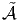 . Les éléments (a,c) de
l’algèbre augmentée sont notés simplement a + c1 l. La multiplication est
telle que (a1 + c11 l)(a2 + c21 l) = a1a2 + c1a2 + a1c2 + c1c21 l ; elle doit donc
être formellement définie par
l’algèbre obtenue en rajoutant une unité 1 l à , que celle-ci en
possède déjà une ou non. Les éléments de cette augmentation sont, par
définition, des paire (a,c), avec a ∈ et c ∈ lC. La nouvelle unité est
1l = (0, 1). On identifie a ∈ avec (a, 0) ∈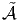 . Les éléments (a,c) de
l’algèbre augmentée sont notés simplement a + c1 l. La multiplication est
telle que (a1 + c11 l)(a2 + c21 l) = a1a2 + c1a2 + a1c2 + c1c21 l ; elle doit donc
être formellement définie par
 Si ne posséde pas d’unité, il n’y a pas de confusion possible. Si en
posséde déjà une, nous la désignons par e = (e, 0) et il est certain que e
n’est plus l’unité de
Si ne posséde pas d’unité, il n’y a pas de confusion possible. Si en
posséde déjà une, nous la désignons par e = (e, 0) et il est certain que e
n’est plus l’unité de  , mais seulement un projecteur (e2 = e). Notons que,
avec a ∈ et c ∈ lC, δ(a + c1 l) = δa dans Ω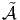 . On peut donc identifier les
formes multilinéaires sur avec certaines formes linéaires sur Ω
, mais seulement un projecteur (e2 = e). Notons que,
avec a ∈ et c ∈ lC, δ(a + c1 l) = δa dans Ω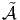 . On peut donc identifier les
formes multilinéaires sur avec certaines formes linéaires sur Ω , en
l’occurence avec les formes ϕ qui sont telles que ϕ(1 lδa1δa2…δan) = 0 en
posant, pour ai ∈
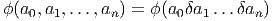
, en
l’occurence avec les formes ϕ qui sont telles que ϕ(1 lδa1δa2…δan) = 0 en
posant, pour ai ∈
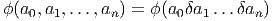
Grâce à cette identification, on peut effectuer toutes les constructions de
nature cohomologique en utilisant comme cochaines ce type particulier de
formes linéaires sur Ω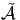 plutôt que de faire appel à des formes
multilinéaires sur . Nous n’irons cependant pas plus loin dans cette
direction.
La cohomologie cyclique : une cohomologie de De Rham non commutative
- Dans le cas non commutatif, nous n’avons pas encore présenté de
construction qui généralise la cohomologie de De Rham (section
1.12.2). En fait, puisque nous travaillons maintenant sur les
algèbres elle-mêmes (dans le cas commutatif on considère l’algèbre
commutative C∞(X) des fonctions et non pas les points de X
eux-mêmes), c’est d’un analogue de l’opérateur d’homologie ∂ sur
les courants dont nous avons besoin. Rappelons que, classiquement,
cet opérateur agit sur les courants de De Rham de la façon suivante
(théorème de Stokes) :
 Ici ω est une forme différentielle quelconque sur X.
Ici ω est une forme différentielle quelconque sur X.
- La définition la plus simple (mais c’est peut-être une question de goût)
est celle qui suit. On définit tout d’abord la notion de cyclicité pour
une forme multilinéaire
 On fait alors la remarque suivante [2] : Si ϕ est cyclique, alors bϕ
l’est aussi.
On fait alors la remarque suivante [2] : Si ϕ est cyclique, alors bϕ
l’est aussi.
Il devient alors naturel de considérer le sous complexe cyclique du
complexe de Hochschild, c’est à dire de restreindre l’opérateur b (le
même que précédemment) aux cochaines de Hochschild cycliques. On
définit alors les espaces Zλn, B
λn des cocycles et cobords cycliques,
ainsi que leurs quotients, les groupes de cohomologie cyclique Hλn.
- Dans le cadre classique, i.e. avec = C∞(X), on montre [2] que
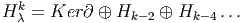 où Ker∂ est le noyau de l’opérateur ∂ agissant dans l’espace des
courants de De Rham de degré k et où Hp désigne le groupe d’
homologie de degré p (pour les courants).
Ainsi, nous n’obtenons pas une correspondance bi-univoque entre les
groupes de cohomologie cyclique et les groupes d’homologie de De
Rham ; néanmoins, l’information contenue est la même, puisque,
en choisissant k assez grand, les groupes de cohomologie cycliques
pairs ou impairs seront respectivement égaux à la somme directe des
groupes d’homologie de De Rham (pairs ou impairs).
Ce résultat suggère qu’il existe une façon canonique d’envoyer Hλp
dans Hλp+2, et c’est effectivement le cas (pour une algèbre
quelconque, d’ailleurs). En fait, on peut démontrer un résultat encore
plus fort : pour toute algèbre, on peut définir un opérateur S, souvent
désigné sous le nom de “opérateur de périodicité de Connes”, qui
envoie Cλp dans C
λp+2 – le symbole C
λ* se réferrant aux cochaines
cycliques.
- Cette façon de définir la cohomologie cyclique (comme sous complexe
de celle de Hochschid), se fait donc sans qu’il soit besoin d’introduire
une généralisation non commutative de l’opérateur ∂. Cela dit, un tel
opérateur existe (il est noté B0, ou B — voir ci-dessous —) et on
peut aussi définir la cohomologie cyclique grâce à lui. La définition
de cette cohomologie, en utilisant les opérateurs en question, est un
peu plus subtile, et nous nous contenterons de donner la définition
des opérateurs B0 et B. Le lecteur interessé pourra consulter [2], [3]
et les références indiquées dans cet ouvrage.
-
Outre l’opérateur de périodicité déjà mentionné, S : Cλp → C
λp+2,
on considère aussi les opérateurs suivants :
- L’opérateur d’antisymétrisation cyclique.
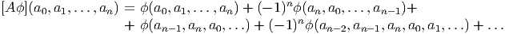
- L’opérateur bord non antisymétrisé B0 défini comme
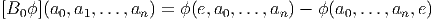 Ici, e désigne l’unité de l’algèbre (et il faut effectivement supposer
que l’algèbre est unitale).
- L’opérateur bord cyclique B = AB0. (ou différentielle de Connes).
On montre alors que B envoie Cn sur Cn-1, que B2 = 0 et que
bB + Bb = 0. En utilisant ces deux dernières propriétés, ainsi que b2 = 0,
on peut construire un bi-complexe (puisque b and B agissent dans des
directions opposées) à partir duquel on peut également définir la
cohomologie cyclique.
-
En utilisant ce dernier bi-complexe on définit aussi la “cohomologie
cyclique entière” de la façon suivante. Les cocycles entiers sont des suites
(ϕ2n) ou (ϕ2n+1) de fonctionnelles paires ou impaires ϕ qui doivent
satisfaire à la contrainte suivante (nous ne l’écrivons que pour le cas
impair) :
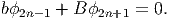
A l’aide de tels cocycles (techniquement, il faut aussi supposer qu’une
certaine condition de croissance est satisfaite), on peut définir des fonctions
entières sur l’algèbre ,

La cohomologie cyclique entière fournit un formalisme approprié pour
l’étude de certaines algèbres non commutatives de dimension infinie
apparaissant en théorie quantique des champs.
6.3.7 Remarque finale
Comme nous l’avons signalé plus haut, notre propos, dans cette dernière section
était simplement d’effectuer un tour rapide dans certains secteurs du zoo non
commutatif, en espérant que le lecteur aura plaisir à y retourner en consultant la
littérature spécialisée. Le présent ouvrage est en effet essentiellement dédié à
l’étude de plusieurs aspects de la géométrie différentielle ; en l’occurence, la
théorie des connexions et des espaces fibrés. Cependant, la physique du
vingtième siècle n’est (n’était !) pas seulement courbe : elle est (était) aussi
quantique. Il eût donc été dommage de passer sous silence ces quelques
développements récents — et passionnants — des mathématiques, qui
généralisent les notions habituelles et quasi intuitives de la géométrie “ordinaire”
(celle des espaces) au monde, encore un peu mystérieux, des espaces non
commutatifs.

 = ϕ (a0,...,ajaj+1,...,an)+
j=0
n+1
(- 1 ) ϕ(an+1a0,a1,...,an)](source928x.png)